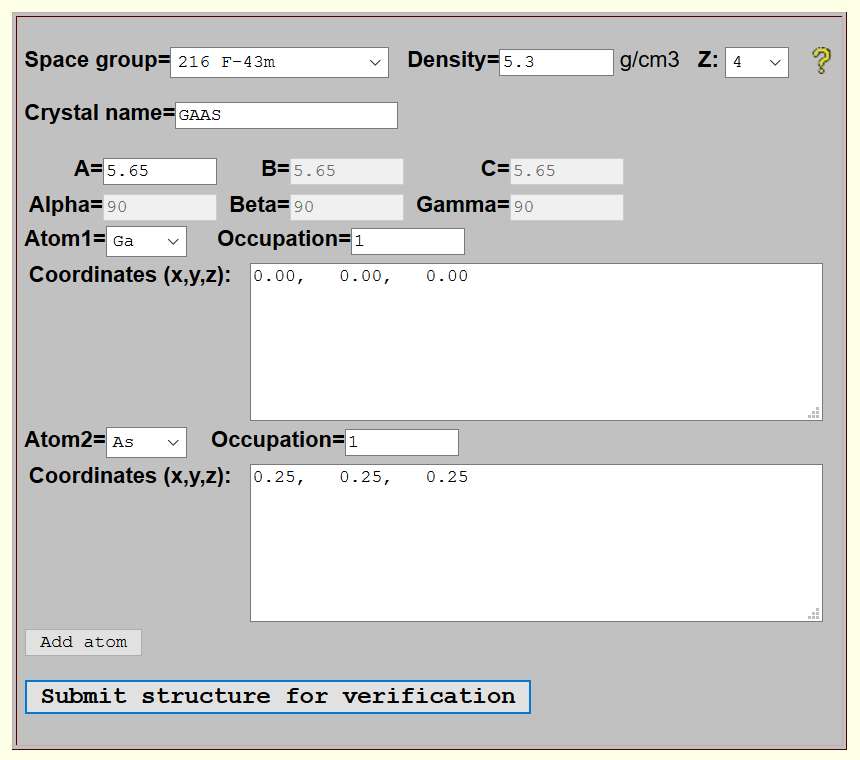
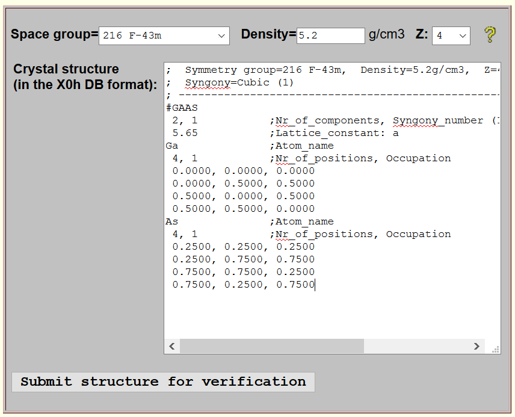

At present there is no automatic procedure to add new structures to the X-ray Server database. Structures need to be submitted to Sergey Stepanov <sstepanov at anl.gov>. Then they are reviewed (checked for consistency) and once the check is successful added to the database. Reviewing typically takes a day, but it is an interactive process. Therefore it is important to provide your correct contact information and references to the sources of structure information.
The easiest way to check new structure for consistency is to use one of the two forms of the structure verification tools, which adds all missing coordinates according to structure symmetry group and runs several tests to ensure all parameters are correct and consistent with each other. Click on a form of your choice in the table below.
 Wizard-style structure input |
 X0h-style structure input |
|---|
In the wizard-style input form, each parameter is entered in its own input field thus guiding you what data is needed to be supplied. It is recommended when you start from scratch. If all checks are successful, it generates a structure record in the X0h DB format which can be emailed to the X-ray Server administrator.
In the X0h-style input form, you enter the structure in the X0h DB format documented below along with a few examples. This form is recommended for advanced users and for refining structures generated by the wizard-style form.
Please, pay attention that the final submission (what you email) must contain *ALL* coordinates of atoms in the unit cell (i.e. the coordinates resulted from applying the space group transformations) and that the coordinates must be brought into the [0.-1.] range. A common mistake is to provide only initial atomic coordinates in the structure (i.e. those before applying the space group generator) while the whole list after applying the space group is needed. An example could be providing one atomic position for Silicon instead of eight. The two structure generation forms should correct these mistakes: find all missing atomic positions and place all coordinates into the [0.-1.] range.
To cross check the submitted crystal structure for the completeness, please additionally submit:
; ;======================================================================= ; ; +--------------------------+ +----------------------------+ ; | Syngony numbers: | | Lattice constants required:| ; |--------------------------| |----------------------------| ; |0/1= Cubic |->| a | ; | 2 = Hexagonal/Trigonal |->| a, c | ; | 3 = Tetragonal |->| a, c | ; | 4 = Trigonal/Rhombohedral|->| a, alpha | ; | 5 = Orthorhombic |->| a, b, c | ; | 6 = Monoclinic |->| a, b, c, beta | ; | 7 = Triclinic |->| a, b, c, alpha, beta, gamma| ; | 8 = ** Amorphous ** |->| ** none ** | ; +--------------+-----------+ +--------------------------+-+ ; | | ;+-------------------------+-----------------+ | ;| STRUCTURE OF RECORDS: | | | ;|-------------------------+-----------------| | ;|[;Comment] | | | ;|Structure_code | | | ;|;Comment -------V------ | | ;|Nr_of_components, Syngony_number [, rho(*)]| | ;|[;Comment] | | ;|Lattice_params(1-6) [, Poisson_Ratio(**)] |skipped for Syngony=8 <+ ;|;Comment | ;|Name_of_Element_1 [Debye_mode,par1,par2] | ;|Nr_of_positions_of_element_1 [, Occupation]| ;|x, y, z -+ | ;|....... +-coords of positions of element-1|skipped for Syngony=8; ;|x, y, z -+ | ;|.............................. | ;|[;Comment] | ;|Name_of_Element_N [Debye_mode,par1,par2] | ;|Nr_of_positions_of_element_N [, Occupation]| ;|x, y, z -+ | ;|....... + coords of positions of element-N|skipped for Syngony=8; ;|x, y, z -+ | ;+-------------------------------------------+ ; (*) rho -- is the material density (gm/cm^3). This parameter ; is relevant Syngony_number=8 (amorphous structures) ; only. ; (**) Poisson_Ratio -- NOT used by X0h inteslf. It is simply supplied as ; a tabular value to calling diffraction programs. ; This parameter is relevant for Syngony_number=0/1 ; (cubic structures) only. ; ---------------------------------------------------------------------- |
;===================================================== ; Auricupride (Cu3Au) crystal ; Structure type: Pm3m, space group #221, (Z=1) ; Source: ; https://www.aue.auc.dk/~stoltze/cryst/221/Cu3Au/main.htm ; https://cst-www.nrl.navy.mil/lattice/struk/l1_2.html ; ----------- #Cu3Au 2, 0 3.7493, 0.333 Au 1 0., 0., 0. Cu 3 0.5, 0.5, 0.0 0.5, 0.0, 0.5 0.0, 0.5, 0.5 ; ;===================================================== ; Alfa-Quartz [SiO(2)] ; Symmetry: P3/121, space group #152, (Z=3) ; ------------------------------------------------- ; Hexagonal coords of atoms: ; Si: (U0, 0, 0) (-U0,-U0, 1/3) (0, U0, 2/3) ; O: (X0, Y0, Z0) (Y0-X0,-X0,Z0+1/3) (-Y0,X0-Y0,Z0+2/3) ; (X0-Y0,-Y0,-Z0) (Y0, X0,2/3-Z0) (-X0,Y0-X0,1/3-Z0) ; ; Here: X0=0.41303 Y0=0.27068 Z0=0.11651 U0=0.46808 ; ; Structure parameters obtained from: ; R.H.D.Nuttall,J.A.Weil - Canadian Journal of Physics, ; vol.59, numb.11, 1981, p.1696-1708,1709-1718. ; ----------- #Quartz 2, 2 4.9079, 5.3991 ;4.91304, 5.40463 - DABAX data Si 3 0.46808, 0.00000, 0.00000 -0.46808, -0.46808, 0.33333 0.00000, 0.46808, 0.66667 O 6 0.41303, 0.27068, 0.11651 -0.14235, -0.41303, 0.44984 -0.27068, 0.14235, 0.78318 0.14235, -0.27068, -0.11651 0.27068, 0.41303, 0.55016 -0.41303, -0.14235, 0.21682 ; ;=============================================== ; _ ; LiNbO(3) - symmetry: R3c (No 161), (Z=2) ;----------------------------------------- #LiNbO3 3, 2 5.14829, 13.8631 Li 6 .0000, .0000, .2829 .0000, .0000, .7829 .6667, .3333, .6162 .6667, .3333, .1162 .3333, .6667, .9496 .3333, .6667, .4496 Nb 6 .0000, .0000, .0000 .0000, .0000, .5000 .6667, .3333, .3333 .6667, .3333, .8333 .3333, .6667, .6667 .3333, .6667, .1667 O 18 .0492, .3446, .0647 .6554, .7046, .0647 .2954, .9508, .0647 .6554, .9508, .5647 .0492, .7046, .5647 .2954, .3446, .5647 .7159, .6779, .3980 .3221, .0379, .3980 .9621, .2841, .3980 .3221, .2841, .8980 .7159, .0379, .8980 .9621, .6779, .8980 .3825, .0113, .7314 .9887, .3713, .7314 .6287, .6175, .7314 .9887, .6175, .7314 .3825, .3713, .2314 .6287, .0113, .2314 ; |